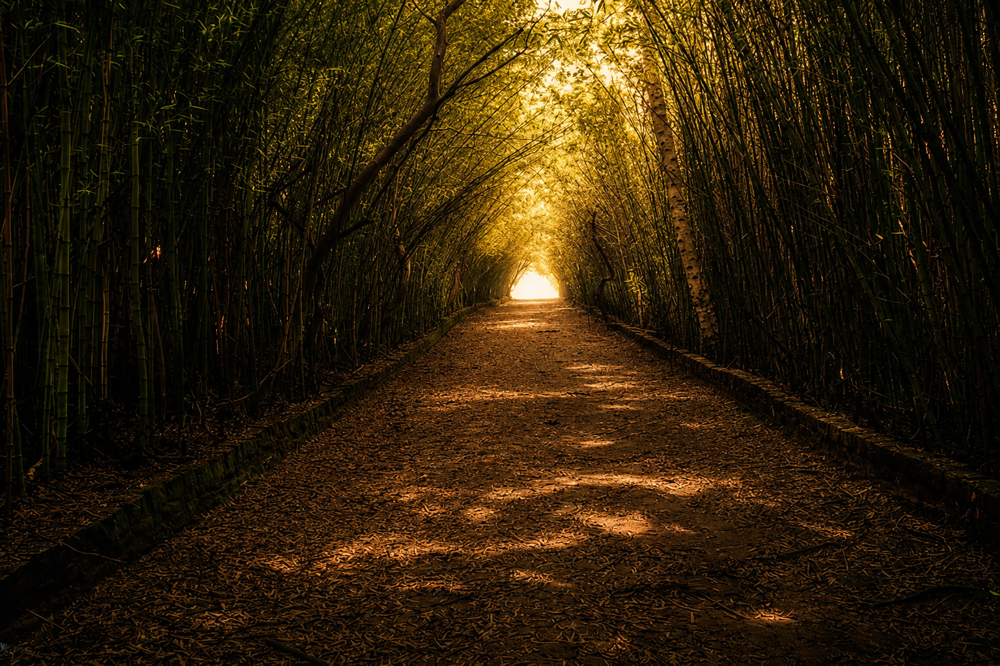
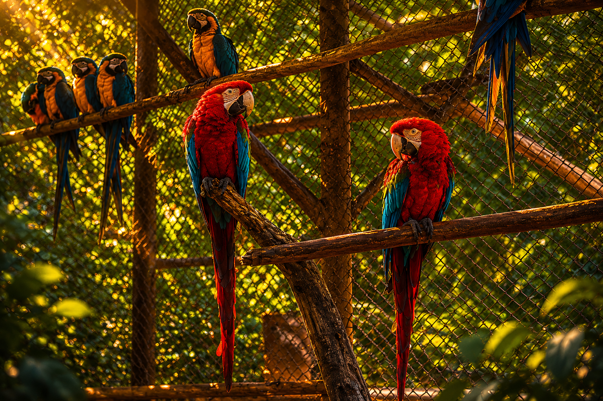
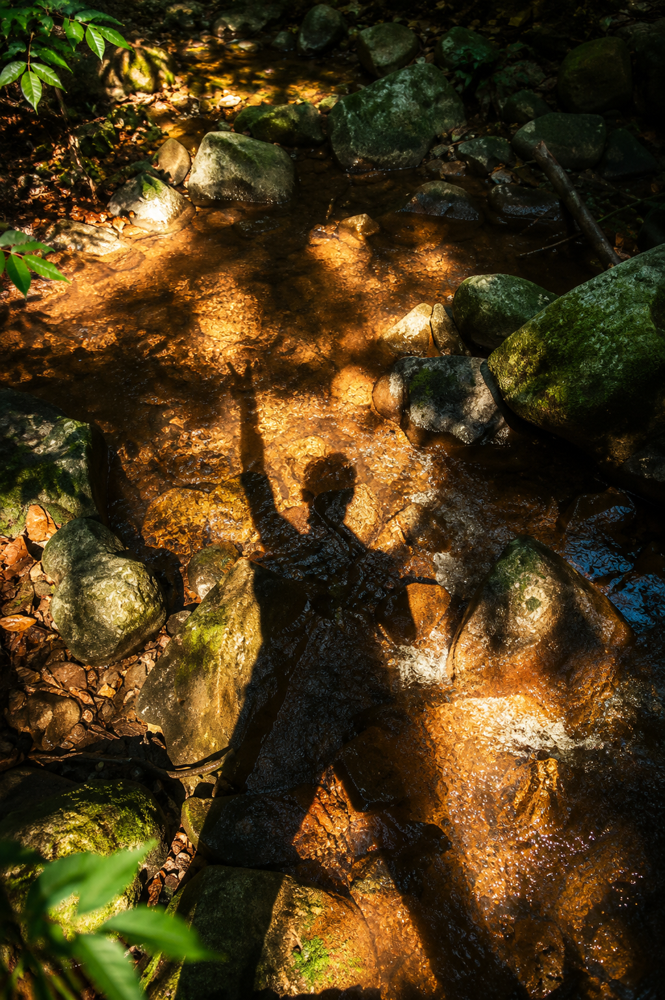
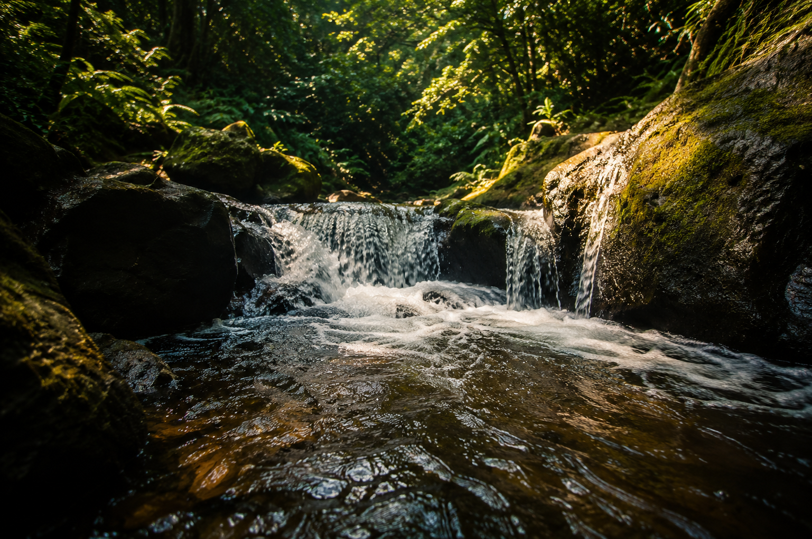
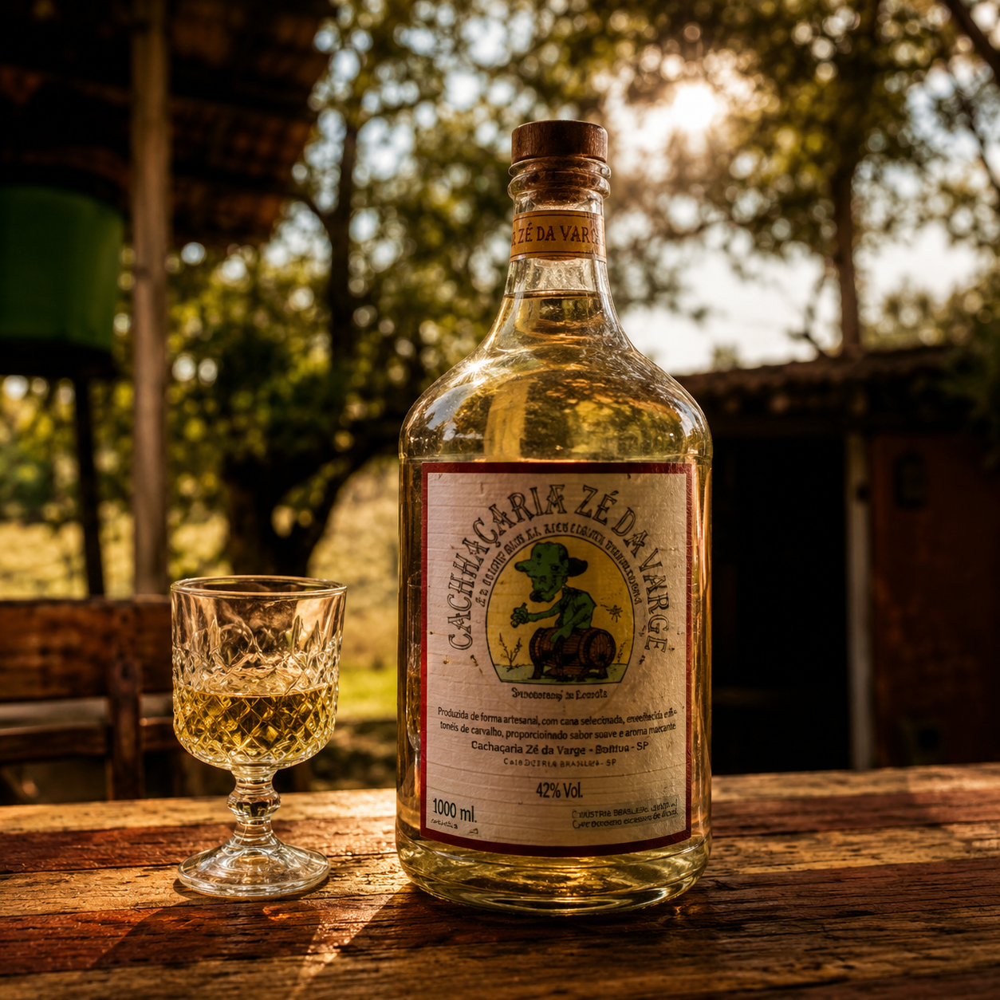
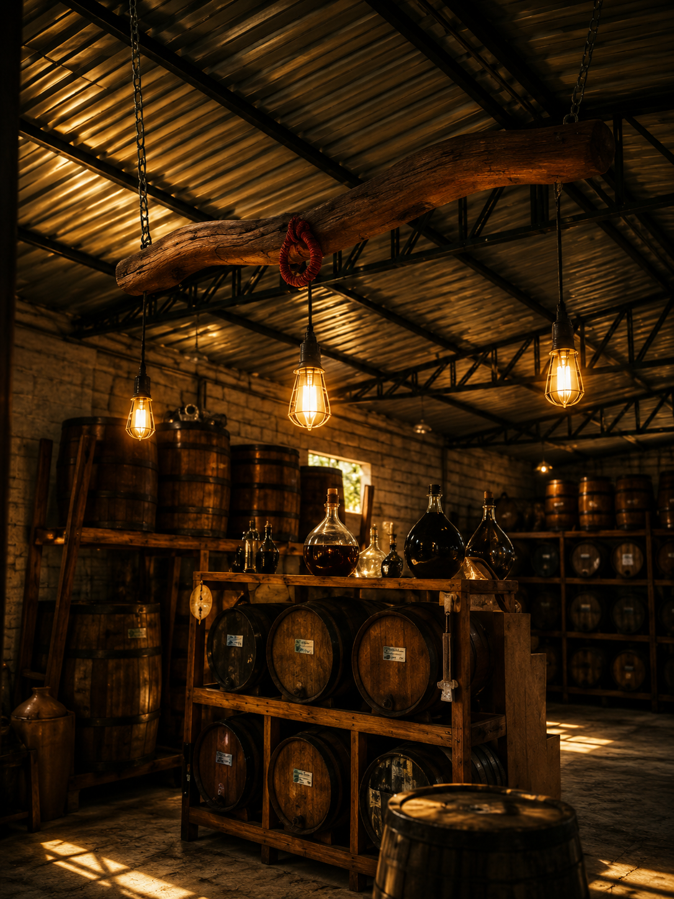

Descubra experiências inesquecíveis em Boituva, conectando natureza, aventura e tradição em um roteiro pensado para despertar fortes emoções!
**Uma experiência pensada para diferentes estilos de viajantes** Nossa proposta turística foi cuidadosamente organizada para proporcionar uma experiência completa em Boituva, valorizando a natureza, a cultura local e o lazer. Pensando no conforto e na melhor experiência do visitante, estruturamos um roteiro equilibrado, permitindo que cada local seja aproveitado em seu melhor momento.
🌿 **09:00 – Parque Ecológico** Iniciamos o dia em meio à tranquilidade e ao contato com a natureza no Parque Ecológico, ideal para caminhadas leves, apreciação do ambiente e momentos de lazer ao ar livre.
💦 **12:30 – Cachoeira Gorillas** Em seguida, seguimos para a Cachoeira Gorillas, proporcionando uma experiência de aventura e contemplação, perfeita para quem aprecia paisagens naturais e momentos de conexão com o ambiente.
🥃 **16:30 – Cachaçaria Zé da Varge** Encerramos o roteiro com uma experiência cultural e gastronômica na Cachaçaria Zé da Varge, valorizando tradições locais, sabores regionais e a história de um comércio que representa a identidade do interior paulista.
Mais do que um passeio, oferecemos uma nova forma de conhecer Boituva, explorando atrativos que merecem maior valorização e ampliando as possibilidades para visitantes com diferentes preferências.
Uma seleção especial de experiências que unem ecoturismo, aventura e cultura regional, solidificando a identidade da população local.

Um refúgio verde para viver momentos de paz e conexão com a natureza.

Se você está planejando uma visita a Boituva, o Parque Ecológico Municipal Eugênio Walter é uma parada turística obrigatória. Com uma impressionante área verde de 300 mil metros quadrados, este espaço une a preservação ambiental ao lazer familiar, com um grande diferencial: o acesso ao parque e todas as suas principais atrações são 100% gratuitos.O local funciona como um santuário para mais de 100 animais e aves silvestres resgatados, que vivem protegidos sob cuidados especiais. Enquanto você caminha pelas trilhas arborizadas, é comum ver pavões e gansos circulando livremente, garantindo fotos incríveis. Para quem busca movimento, o parque oferece arvorismo, tirolesa e pedalinho no lago sem custo nenhum, tudo operado com equipamentos de proteção e sob a supervisão de bombeiros civis. Com plena acessibilidade, estacionamento próprio e áreas para piquenique, é o cenário ideal para um dia seguro e inesquecível em Boituva.

Aventura, trilhas e paisagens inesquecíveis em meio à natureza.

Se você pensa que Boituva vive apenas de paraquedismo e balonismo, precisa conhecer a Cachoeira Gorillas. Escondida entre plantações e matas nativas na zona rural, essa joia oculta é o destino perfeito para os turistas que buscam uma verdadeira aventura de ecoturismo e querem fugir dos roteiros tradicionais. O melhor de tudo? O acesso a essa beleza natural é totalmente gratuito.Ao contrário dos parques estruturados, a Cachoeira Gorillas oferece uma experiência 100% rústica e selvagem. Para chegar até a sua queda d'água refrescante e ao poço natural, os viajantes encaram uma trilha de nível moderado a difícil, que passa por trechos de mata fechada e descidas íngremes. O esforço físico é recompensado pelo som relaxante das águas e pela paz de um cenário quase intocado. É o lugar ideal para quem pratica trekking, cicloturismo ou simplesmente quer se desconectar da cidade e renovar as energias em um banho de cachoeira revigorante.

Cultura, tradição e sabores típicos do interior paulista.

Se você deseja vivenciar a verdadeira cultura do interior, a Cachaçaria Zé da Varge é uma parada indispensável no seu roteiro por Boituva. Localizado no Sítio São Benedito, este tradicional alambique familiar convida os turistas a mergulharem no universo da produção artesanal de cachaças e licores, combinando história, hospitalidade e sabores premiados.Fundada formalmente em 2004, a cachaçaria nasceu da paixão de uma família que transformou a matéria-prima cultivada no próprio sítio em um ponto turístico de destaque na região. Lá, os visitantes podem acompanhar de perto o processo de destilação e explorar uma charmosa loja rural repleta de produtos locais. O grande destaque da casa são as bebidas envelhecidas em madeiras nobres, como a renomada cachaça de Umburana — eleita por duas vezes uma das melhores do estado em avaliações da Unesp — além de criações maturadas em carvalho escocês, americano e europeu. Para fechar a experiência com chave de ouro, aos domingos o ambiente ganha um novo e confortável galpão animado por uma autêntica moda de viola ao vivo.
Ao desenvolver esta rota turística, decidimos sair do convencional. Embora Boituva seja amplamente conhecida pelo balonismo e paraquedismo, percebemos que muitos outros locais e comércios acabam ficando em segundo plano devido ao forte foco no turismo de aventura. Nossa proposta é dar visibilidade a espaços que também representam a identidade e o potencial turístico da cidade. Por isso, escolhemos o **Parque Ecológico**, a **Cachoeira Gorillas** e a **Cachaçaria Zé da Varge**, três experiências que unem natureza, cultura, lazer e tradição. Mais do que apresentar novos destinos, buscamos incentivar a valorização desses locais, fortalecer os comércios da região e atrair visitantes com diferentes preferências, mostrando que Boituva tem muito a oferecer além da adrenalina.